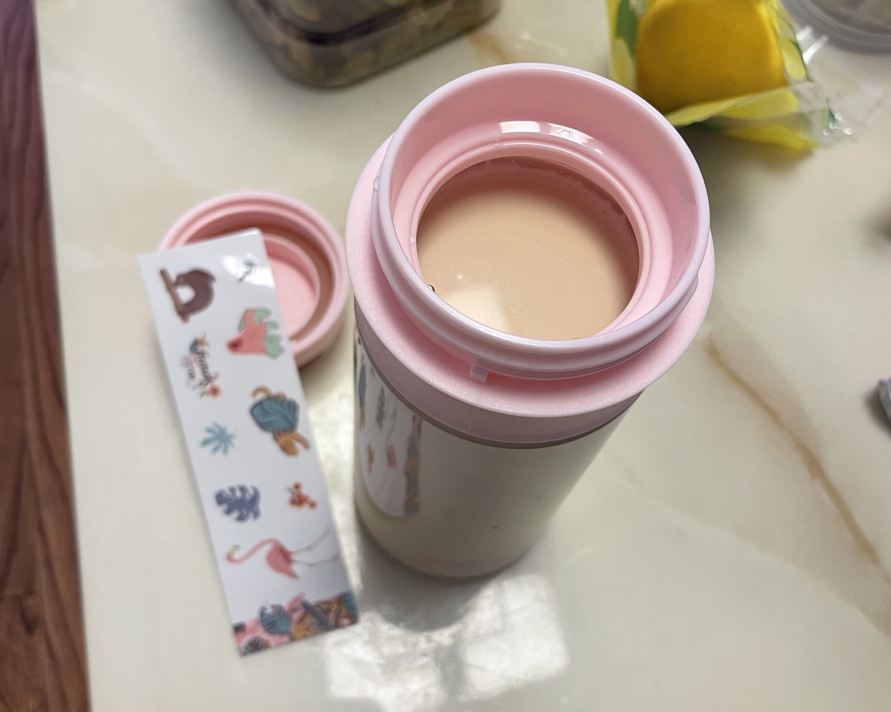
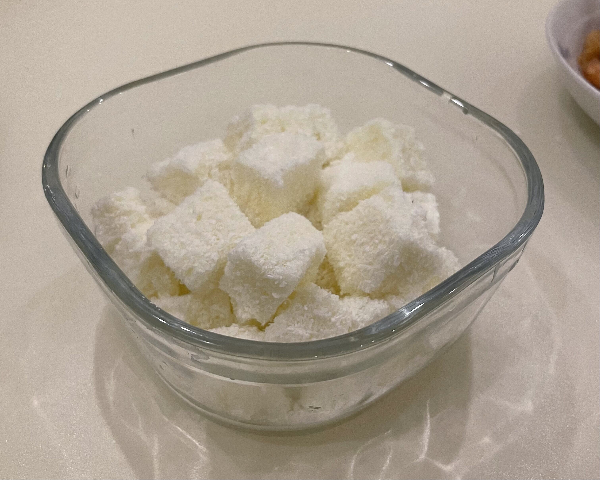
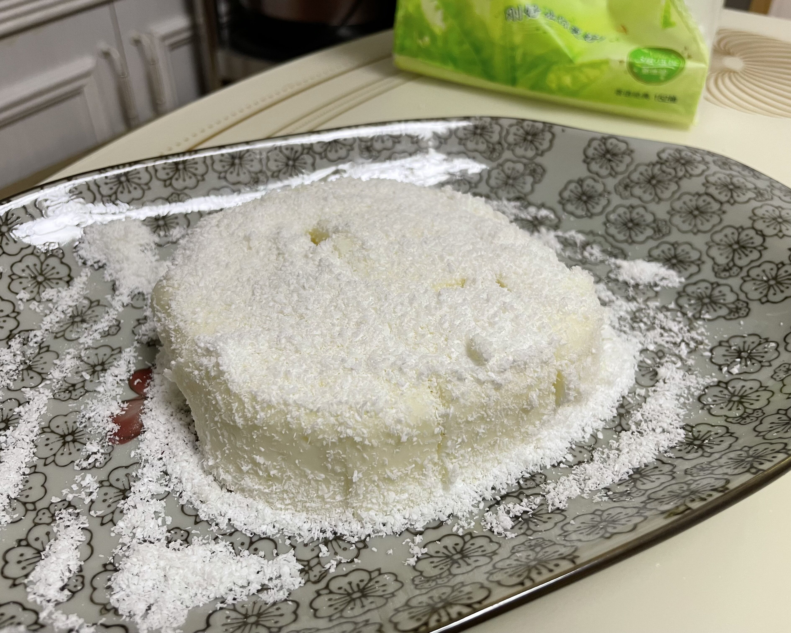

Summer Special
最近逐渐忙碌了起来，没有太多时间玩烘焙。不过难耐夏日炎热，就还是忙里偷闲整了两个冰冰凉凉的小甜品。
Milky Tea
奶茶制作的原料基本上大同小异，差别主要体现在牛奶与茶的比例。这个可以根据个人的口味适当调整。
Steps
- 红茶茶叶与糖先下锅煮，开中火至糖开始融化转小火，用塑料铲辅助锅加热。
- 翻炒至融化的糖水变成焦糖，倒入清水（冷水遇热锅可能会出现飞溅），用塑料铲铲起底部粘锅的茶叶和糖，适当搅拌。
- 开小火等水烧开（如果喜欢茶味浓的可以多煮一会，不喜欢茶味的，等茶水一出现成型气泡就差不多可以关火了），倒入牛奶混合。
- 最后过滤茶叶，Finished。
Materials(As A Reference)
| 澳牛盒装牛奶 | 400g |
| 红茶茶叶 | 3g |
| 白糖 | 27g |
| 清水 | 250g |



Frozen Yoghurts
Materials
| Name | Dosage |
|---|---|
| 酸奶 | 270g |
| 淡奶油 | 100g |
| 白糖 | 35g |
| 玉米淀粉 | 40g |
| 椰蓉 | 大量 |
Step
摸了，下次再写